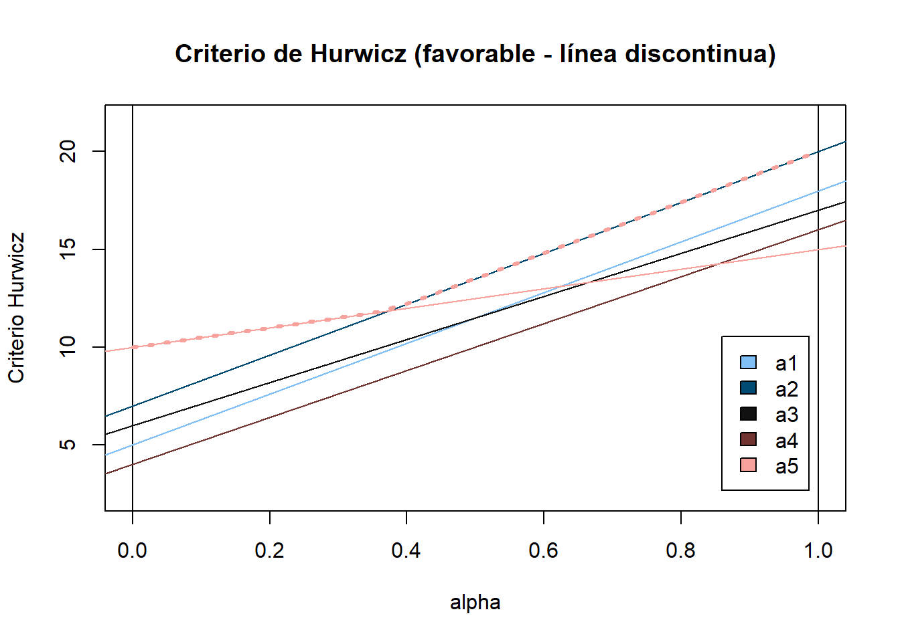
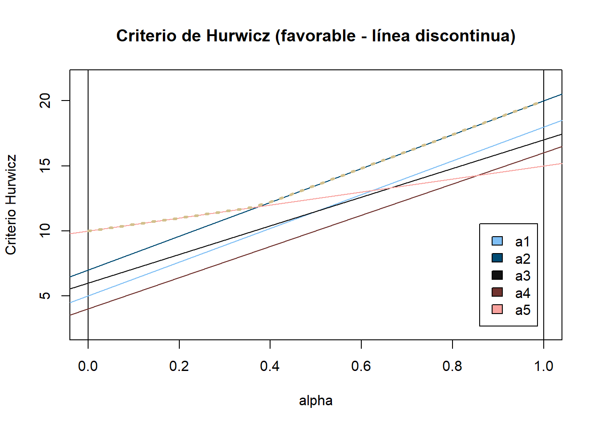
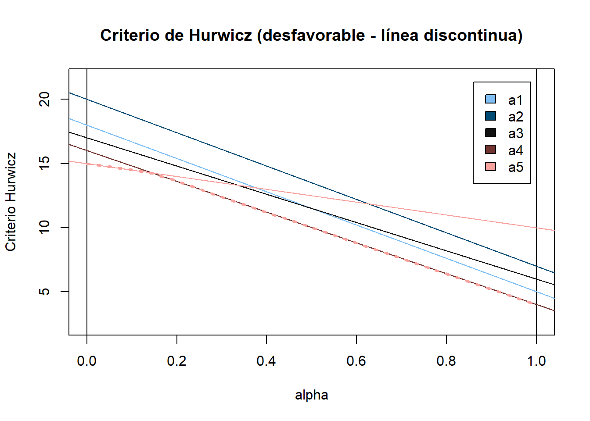
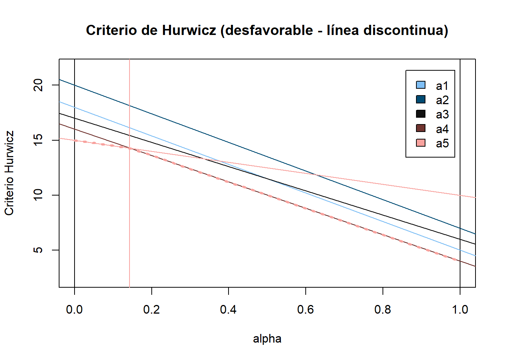

# Cargar librerías necesarias
library(tinytable)
# Cargar script con funciones
source("teoriadecision_funciones_incertidumbre.R")Soluciones de los problemas
Problema 1
Se deben implementar todos los métodos de decisión bajo incertidumbre, tanto para el caso favorable como para el caso desfavorable (pesimista, optimista, Hurwicz, Savage, Laplace y punto ideal) para la siguiente tabla de decisión:
| \(\omega_1\) | \(\omega_2\) | \(\omega_3\) | \(\omega_4\) | |
|---|---|---|---|---|
| \(a_1\) | 5 | 15 | 8 | 18 |
| \(a_2\) | 7 | 13 | 14 | 20 |
| \(a_3\) | 6 | 17 | 11 | 17 |
| \(a_4\) | 4 | 14 | 16 | 16 |
| \(a_5\) | 10 | 10 | 13 | 15 |
# Definir la tabla de decisión
tabla_decision <- crea.tablaX(
c(5, 15, 8, 18,
7, 13, 14, 20,
6, 17, 11, 17,
4, 14, 16, 16,
10, 10, 13, 15),
numalternativas = 5, numestados = 4,
nb_alternativas = c("a1", "a2", "a3", "a4", "a5"),
nb_estados = c("ω1", "ω2", "ω3", "ω4")) Caso favorable
Método pesimista
alternativa_pesimista <- criterio.Wald(tabla_decision, favorable = TRUE)Para el criterio de Wald, en el caso favorable, la alternativa 5 es la mejor y el valor óptimo es 10.
Método optimista
alternativa_optimista <- criterio.Optimista(tabla_decision, favorable = TRUE)Para el criterio Optimista, en el caso favorable, la alternativa 2 es la mejor y el valor óptimo es 20.
Método Hurwicz
alternativa_Hurwicz <- criterio.Hurwicz(tabla_decision, alfa = 0.5, favorable = TRUE)
alternativas_Hurwicz_alfas <- criterio.Hurwicz.General(tabla_decision, alfa = 10, favorable = TRUE)
tb_Hurwicz <- data.frame(matrix(c(
seq(from = 0, to = 1, by = (1/alternativas_Hurwicz_alfas$alfa)),
alternativas_Hurwicz_alfas$AlternativaOptima,
alternativas_Hurwicz_alfas$ValorOptimo),
nrow = length(alternativas_Hurwicz_alfas$AlternativaOptima),
byrow = FALSE,
))
colnames(tb_Hurwicz) <- c("Alfa", "Alternativa Óptima", "Valor Óptimo")Para el criterio de Hurwicz, en el caso favorable, la alternativa 2 es la mejor y el valor óptimo es 13.5. Con un valor de alfa = 0.5.
Se muestra a continuación una tabla con las alternativas óptimas y los valores óptimos para diferentes valores de alfa, que van desde 0 hasta 1 con incrementos de 0.1:
| Alfa | Alternativa Óptima | Valor Óptimo |
|---|---|---|
| 0.0 | 5 | 10.0 |
| 0.1 | 5 | 10.5 |
| 0.2 | 5 | 11.0 |
| 0.3 | 5 | 11.5 |
| 0.4 | 2 | 12.2 |
| 0.5 | 2 | 13.5 |
| 0.6 | 2 | 14.8 |
| 0.7 | 2 | 16.1 |
| 0.8 | 2 | 17.4 |
| 0.9 | 2 | 18.7 |
| 1.0 | 2 | 20.0 |
Y gráficamente:
gráfico_Hurwicz <- dibuja.criterio.Hurwicz(tabla_decision, favorable = TRUE)
Además, se muestra un gráfico donde se pueden apreciar los intervalos de las alternativas óptimas para diferentes valores de alfa:
intervalos_Hurwicz <- dibuja.criterio.Hurwicz_Intervalos(tabla_decision, favorable = TRUE)
Método Savage
alternativa_Savage <- criterio.Savage(tabla_decision, favorable = TRUE)Para el criterio de Savage, en el caso favorable, la alternativa 2 es la mejor y el valor óptimo es 4.
Método Laplace
alternativa_Laplace <- criterio.Laplace(tabla_decision, favorable = TRUE)Para el criterio de Laplace, en el caso favorable, la alternativa 2 es la mejor y el valor óptimo es 13.5. #### Método punto ideal
alternativa_puntoideal <- criterio.PuntoIdeal(tabla_decision, favorable = TRUE)Para el criterio de Punto Ideal, en el caso favorable, la alternativa 2 es la mejor y el valor óptimo es 5.3851648.
Resumen caso favorable
resumen_favorable <- data.frame(
Criterio = c(alternativa_pesimista$criterio,
alternativa_optimista$criterio,
alternativa_Hurwicz$criterio,
alternativa_Savage$criterio,
alternativa_Laplace$criterio,
alternativa_puntoideal$criterio),
Alternativa_Óptima = c(alternativa_pesimista$AlternativaOpt,
alternativa_optimista$AlternativaOpt,
alternativa_Hurwicz$AlternativaOpt,
alternativa_Savage$AlternativaOpt,
alternativa_Laplace$AlternativaOpt,
alternativa_puntoideal$AlternativaOpt)
)
tt(resumen_favorable)| Criterio | Alternativa_Óptima |
|---|---|
| Wald | 5 |
| Optimista | 2 |
| Hurwicz | 2 |
| Savage | 2 |
| Laplace | 2 |
| Punto Ideal | 2 |
Vemos que las alternativas óptimas son diferentes según el criterio utilizado, siendo la alternativa \(a_2\) la que más veces aparece como óptima (5 veces). Ya alternativa \(a_5\) aparece una sola vez como óptima para el criterio pesimista y es la mejor alternativa también para el criterio de Hurwicz con valores de \(\alpha\) menores que ____ .
Caso desfavorable
Método pesimista
alternativa_pesimista_desfavorable <- criterio.Wald(tabla_decision, favorable = FALSE)Para el criterio de Wald, en el caso desfavorable, la alternativa 5 es la mejor y el valor óptimo es 15.
Método optimista
alternativa_optimista_desfavorable <- criterio.Optimista(tabla_decision, favorable = FALSE)Para el criterio Optimista, en el caso desfavorable, la alternativa 4 es la mejor y el valor óptimo es 4.
Método Hurwicz
alternativa_Hurwicz_desfavorable <- criterio.Hurwicz(tabla_decision, alfa = 0.5, favorable = FALSE)
alternativas_Hurwicz_alfas_desfavorable <- criterio.Hurwicz.General(tabla_decision, alfa = 10, favorable = FALSE)
tb_Hurwicz_desfavorable <- data.frame(matrix(c(
seq(from = 0, to = 1, by = (1/alternativas_Hurwicz_alfas_desfavorable$alfa)),
alternativas_Hurwicz_alfas_desfavorable$AlternativaOptima,
alternativas_Hurwicz_alfas_desfavorable$ValorOptimo),
nrow = length(alternativas_Hurwicz_alfas_desfavorable$AlternativaOptima),
byrow = FALSE,
))
colnames(tb_Hurwicz_desfavorable) <- c("Alfa", "Alternativa Óptima", "Valor Óptimo")Para el criterio de Hurwicz, en el caso desfavorable, la alternativa 4 es la mejor y el valor óptimo es 10. Con un valor de alfa = 0.5.
Se muestra a continuación una tabla con las alternativas óptimas y los valores óptimos para diferentes valores de alfa, que van desde 0 hasta 1 con incrementos de 0.1:
| Alfa | Alternativa Óptima | Valor Óptimo |
|---|---|---|
| 0.0 | 5 | 15.0 |
| 0.1 | 5 | 14.5 |
| 0.2 | 4 | 13.6 |
| 0.3 | 4 | 12.4 |
| 0.4 | 4 | 11.2 |
| 0.5 | 4 | 10.0 |
| 0.6 | 4 | 8.8 |
| 0.7 | 4 | 7.6 |
| 0.8 | 4 | 6.4 |
| 0.9 | 4 | 5.2 |
| 1.0 | 4 | 4.0 |
Y gráficamente:
gráfico_Hurwicz_desfavorable <- dibuja.criterio.Hurwicz(tabla_decision, favorable = FALSE)
Además, se muestra un gráfico donde se pueden apreciar los intervalos de las alternativas óptimas para diferentes valores de alfa:
intervalos_Hurwicz_desfavorable <- dibuja.criterio.Hurwicz_Intervalos(tabla_decision, favorable = FALSE)
Método Savage
alternativa_Savage_desfavorable <- criterio.Savage(tabla_decision, favorable = FALSE)Para el criterio de Savage, en el caso desfavorable, la alternativa 1 es la mejor y el valor óptimo es 5.
Método Laplace
alternativa_Laplace_desfavorable <- criterio.Laplace(tabla_decision, favorable = FALSE)Para el criterio de Laplace, en el caso desfavorable, la alternativa 1 es la mejor y el valor óptimo es 11.5.
Método punto ideal
alternativa_puntoideal_desfavorable <- criterio.PuntoIdeal(tabla_decision, favorable = FALSE)Para el criterio de Punto Ideal, en el caso desfavorable, la alternativa 1 es la mejor y el valor óptimo es 5.9160798.
Resumen caso desfavorable
resumen_desfavorable <- data.frame(
Criterio = c(alternativa_pesimista_desfavorable$criterio,
alternativa_optimista_desfavorable$criterio,
alternativa_Hurwicz_desfavorable$criterio,
alternativa_Savage_desfavorable$criterio,
alternativa_Laplace_desfavorable$criterio,
alternativa_puntoideal_desfavorable$criterio),
Alternativa_Óptima = c(alternativa_pesimista_desfavorable$AlternativaOpt,
alternativa_optimista_desfavorable$AlternativaOpt,
alternativa_Hurwicz_desfavorable$AlternativaOpt,
alternativa_Savage_desfavorable$AlternativaOpt,
alternativa_Laplace_desfavorable$AlternativaOpt,
alternativa_puntoideal_desfavorable$AlternativaOpt)
)
tt(resumen_desfavorable)| Criterio | Alternativa_Óptima |
|---|---|
| Wald | 5 |
| Optimista | 4 |
| Hurwicz | 4 |
| Savage | 1 |
| Laplace | 1 |
| Punto Ideal | 1 |
Vemos que las alternativas óptimas son diferentes según el criterio utilizado, siendo la alternativa \(a_1\) la que más veces aparece como óptima (3 veces). La alternativa \(a_4\) aparece en dos ocasiones como óptima, por último para el criterio pesimista la mejor alternativa es \(a_5\) y es la mejor alternativa también para el criterio de Hurwicz con valores de \(\alpha\) menores que ____ .